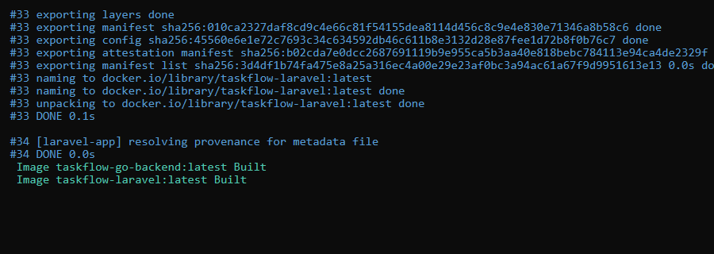
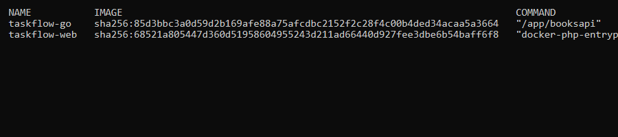
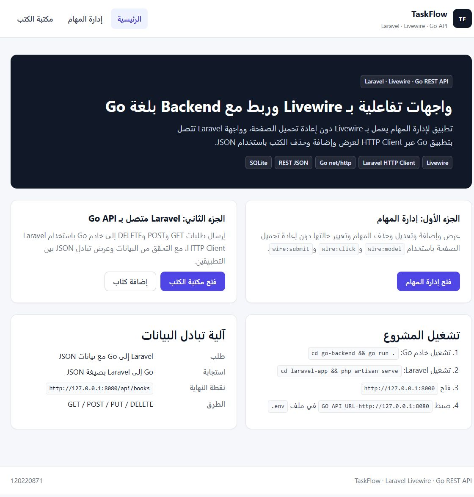
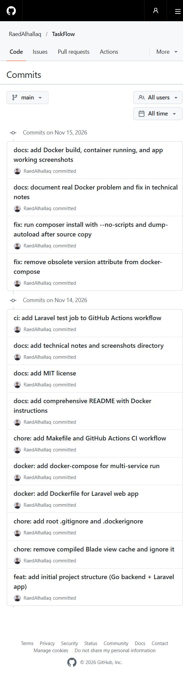
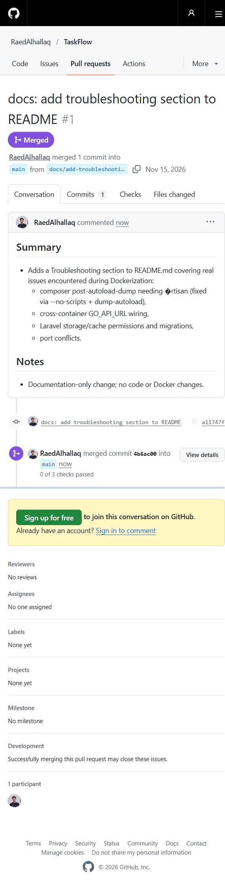

Student: Raed Alhallaq | Student ID: 120220871
Project: TaskFlow — Laravel + Livewire task manager with a Go REST API (books), fully Dockerized.
https://github.com/RaedAlhallaq/TaskFlow

Terminal output: Image taskflow-go-backend:latest Built and Image taskflow-laravel:latest Built.

docker compose ps showing taskflow-go and taskflow-web as Up (healthy).

Browser at http://localhost:8000 (home page); tasks at /tasks and books at /books also work. Go API health: http://localhost:8080/health.

GitHub repository → Commits page listing the meaningful commits.

PR #1 opened from docs/add-troubleshooting-section into main and merged.
To create the PDF: open this file in a browser, press Ctrl+P, choose "Save as PDF", and save as
Raed_Alhallaq_120220871_Assignment2.pdf.